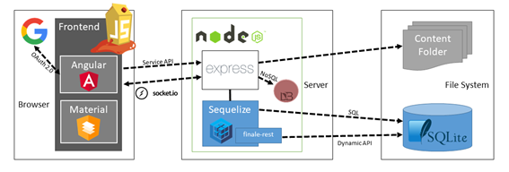

Las aplicaciones web son uno de los elementos más problemáticos en la seguridad de las organizaciones. Se hace imprescindible poder evaluar el nivel de seguridad que ofrecen, ya sea en nuevos desarrollos como al realizar auditorias en aplicaciones ya creadas.
La organización OWASP ofrece una aplicación Web llamada Juice Shop con la finalidad de servir de entrenamiento y aprendizaje en el desarrollo de aplicaciones web. Posee decenas de vulnerabilidades, además establece un conjunto de desafíos para entrenar.
La aplicación se ha desarrollado en:
- Node.js: Entorno de ejecución de código abierto que utiliza el lenguaje Javascript y el núcleo de Google Chrome, aunque se adaptó para ser usado del lado del cliente.
- Express: Framework del lado del servidor para aplicaciones web para Node.js.
- Angular: Framework del lado del cliente creado por Google para el desarrollo de aplicaciones SPA y arquitectura MVC, basado en componentes, servicios y directivas. Se puede desarrollar utilizando principalmente Typescript.
- Otras tecnologías como SQLite, Sequelize (ORM), finale-rest(endpoints, para servicios rest) o MongoDB para base de datos NoSQL.

Además ofrece un libro con licencia Creative Commons en el que se explica el proceso de instalación y un listado de retos clasificados por temática junto con el nivel de dificultad.